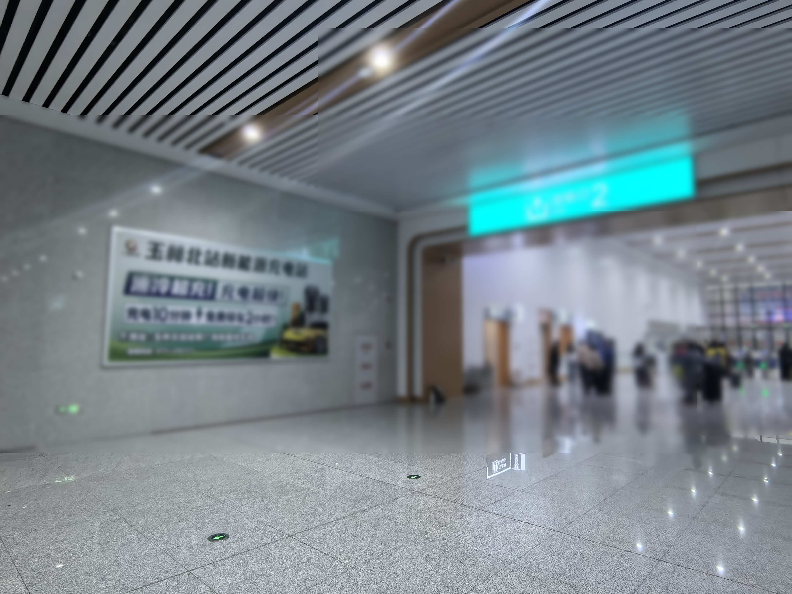
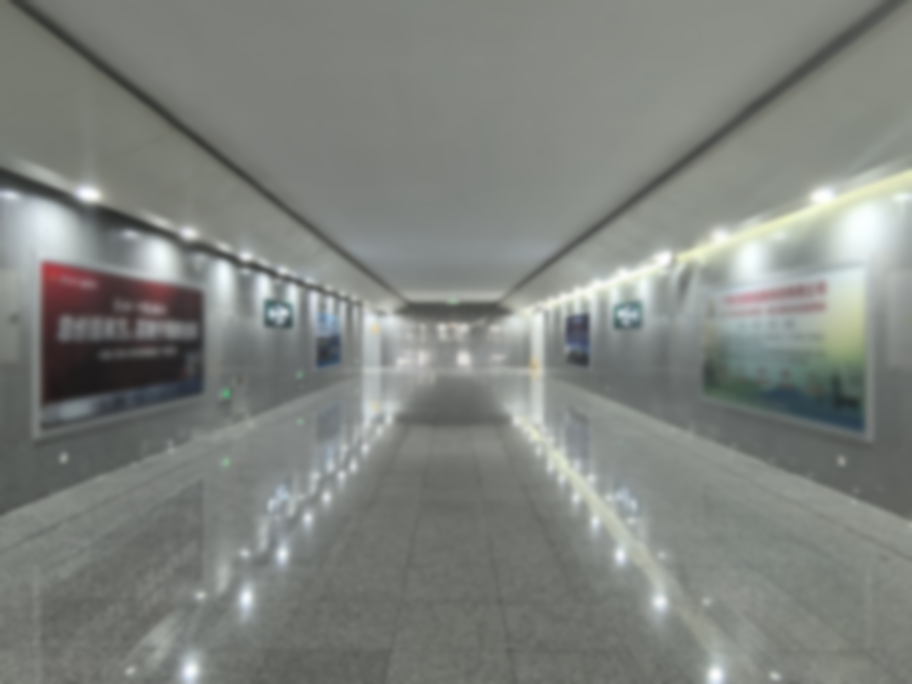
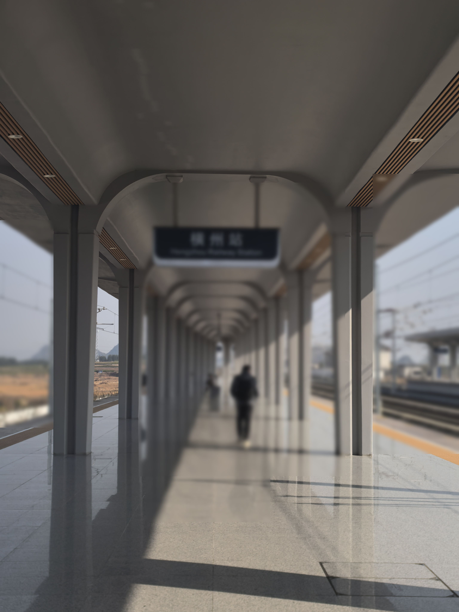
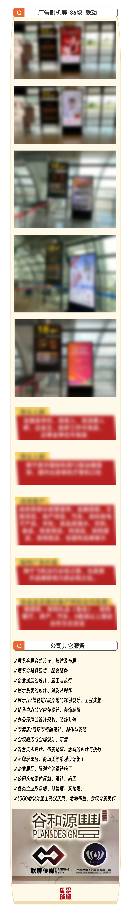
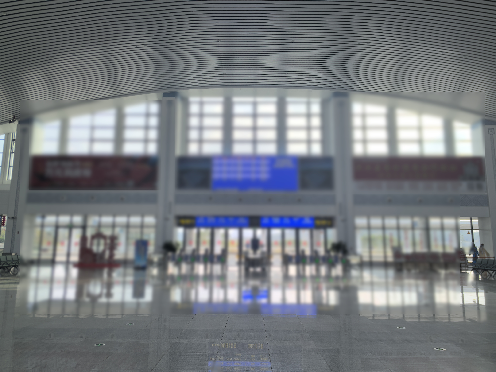
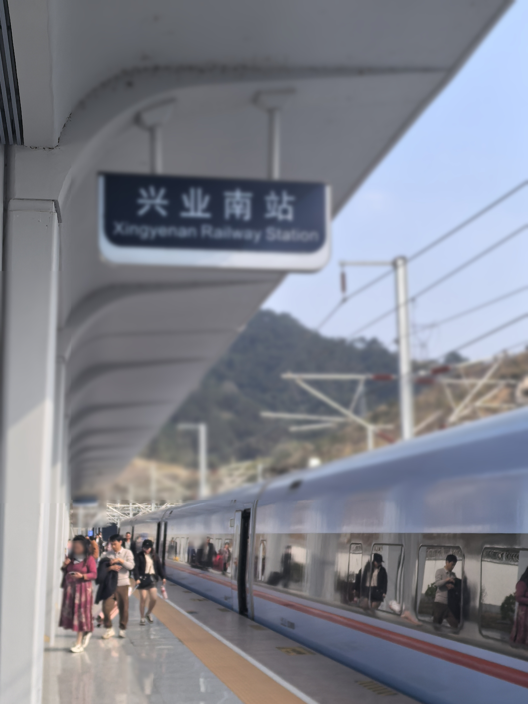

广西品牌的"高铁出圈"之路——从13个500强品牌看高铁广告如何加速区域品牌全国化
13个500强品牌、3233亿元品牌价值、58.7%同比增长——广西品牌正在崛起。南玉高铁，是桂东南品牌走向全国的第一块广告牌。附四类品牌优先上站画像和三步走路径。
阅读全文 ➔
高铁站广告的"错峰投放"策略——南玉高铁三站预算分配与时段选择的实操手册
脉冲式投放、错峰排期、多站联动——三种策略，2000万客群，6万起预算。一文学会"早晚高峰+周末"精确排期，用50%的预算拿到80%的有效曝光。
阅读全文 ➔
九大领域×三大站点：2026广西促消费方案下，品牌高铁广告的精准投放地图
文旅选玉林北站出站通道，茉莉花电商选横州站候车厅，钙基新材料选兴业南站——九大领域、三个站点、一张精准匹配地图，附四大品牌活动投放时间表。
阅读全文 ➔玉林北站4台9线的"超前基建"密码：高铁广告的窗口期红利正在倒计时
硬件按峰值运力建设，运营远未到顶——日均5000人vs全线贯通后1.5-2万的3倍增长空间。2026下半年是窗口期最后的"从容期"，三重红利+三类品牌策略全解析。
阅读全文 ➔文旅+情绪消费+科技：2026高铁广告三大增长极的行业投放手册
文旅增长15-20%、香薰暴增429%、科技品牌持续活跃——三大增长极正在重塑高铁广告的客户结构。一文学会按行业选站点的精准投放策略。
阅读全文 ➔
"高铁+机场"双引擎联动：品牌出行场景全域覆盖的黄金搭档策略
高铁年触达2000万商旅客群，机场年触达1600万高净值人群——两者不是二选一，而是品牌传播的"黄金搭档"。从人群分层到信息分层，详解双引擎联动模型。
阅读全文 ➔
639亿的信任投票：为什么2026年品牌都在"抢"高铁站广告位？
Q1户外广告639.69亿、14,012个品牌参与——高铁站正从"可选媒体"升级为品牌"必选基础设施"。从"心智产权"理论到南玉高铁实战，解析品牌信任资产的构建逻辑。
阅读全文 ➔275万人次、48分钟同城化：南玉高铁运营一周年，高铁站广告的"复利价值"如何释放？
日均7500人次、20列覆盖全时段、三站三种圈层——从客流"三重增长引擎"看南玉高铁广告的长期"复利效应"，兼论玉岑段通车前的"价值洼地"窗口。
阅读全文 ➔户外广告黄金公式"四步法"——在南玉高铁站打造高ROI广告投放的科学路径
选点×排期×创意×归因——告别"凭感觉投"。结合南玉高铁50余个广告位，详解从流量质量评估到创意场景化设计的完整方法论。
阅读全文 ➔南玉高铁+广东：玉岑段2026通车在即，桂粤7000万客群品牌走廊如何提前布局？
从"省内单向终点站"到"跨省双向枢纽"——玉岑段通车将彻底改变玉林北站的战略定位，五大行业前置布局分析。
阅读全文 ➔数字驱动的高铁广告：AI、程序化投放与数据闭环如何让南玉高铁广告更"智能"？
AI地理围栏、动态创意、程序化投放——2026年高铁广告正从"静态展示牌"升级为"可感知、可交互、可优化的智能传播节点"。
阅读全文 ➔从"流量场"到"价值场"：文旅融合下高铁广告如何成为广西品牌场景营销新引擎？
广西2026文旅融合九大领域全面铺开，文旅、康养、体育、研学——高铁站如何从"交通节点"升级为品牌"超级场景入口"？
阅读全文 ➔
中小品牌也能投高铁广告？2026县域品牌低成本占领南玉高铁2000万客群的实操指南
从3万到15万，三档预算方案覆盖餐饮、零售、农产品、本地服务四类中小品牌。不唯价格只唯适配——每分钱花在刀刃上。
阅读全文 ➔
玉林北站152㎡巨幕LED：生日应援、企业祝贺、品牌大秀——广西最大高铁屏能做什么？
从粉丝生日应援到企业庆典祝贺再到品牌创意展示，152㎡全彩巨幕的三大场景解析。含投放指南和价格参考。
阅读全文 ➔南宁机场&南玉高铁：广告投放怎么选？2026广西企业完整攻略
南宁机场1350万客流+南玉高铁2000万人口覆盖，广告投哪个？含最新刊例价、行业自测表、三档预算方案、避坑指南，附直接运营方联系方式。
阅读全文 ➔广西联屏传媒——南宁机场与南珠高铁广告独家运营商
广西联屏传媒科技有限公司独家运营南宁机场T2航站楼及南珠高铁南玉段广告媒体，年覆盖客流量超2600万人次，为品牌提供高端出行场景广告投放服务。
阅读全文 ➔广西联屏传媒正式运营南宁机场T2航站楼及南珠高铁广告媒体资源
广西联屏传媒科技有限公司正式获得南宁机场T2航站楼及南珠高铁南玉段广告媒体独家运营权，标志着广西两大核心交通枢纽广告资源统一运营管理。
阅读全文 ➔